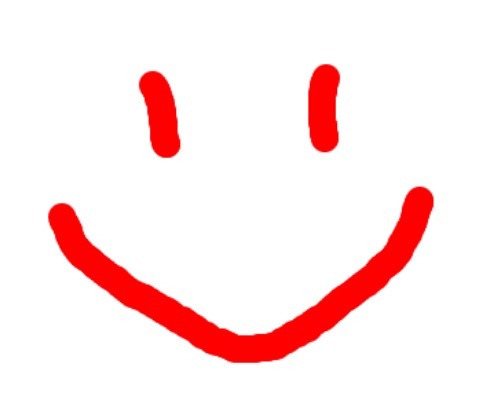
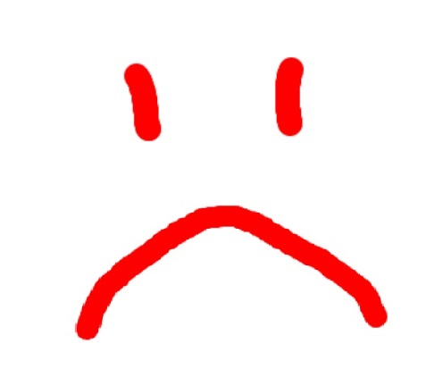

Розпізнавання намальованої емоції
Приклад веселого смайлика:
Приклад сумного смайлика:
Керування: (розкладка - ENG)
Клавіша "C" - очистити екран;
Клавіша "V" - запам'ятовування (треба спочатку навчити
мене, вказавши кілька прикладів);
Клавіша "B" - розпізнавання обличчя.
Алгоритм:
1. Намалюйте смайлик (по прикладі справа) та натисніть 'V'.
2. Вкажіть який смайлик ви намалювали (зверху буде
сповіщення), якщо це веселий - натисніть 'OK',
якщо сумний - 'Cencel'.
3. Після кожного разу очищайте - 'C'. Таким чином
введіть кілька веселих і сумних смайликів.
4. Тоді, намалюйте довільний смайлик та натисніть 'B',
а я спробую розпізнати емоцію, яку ви намалювали.
Ну що спробуємо?)